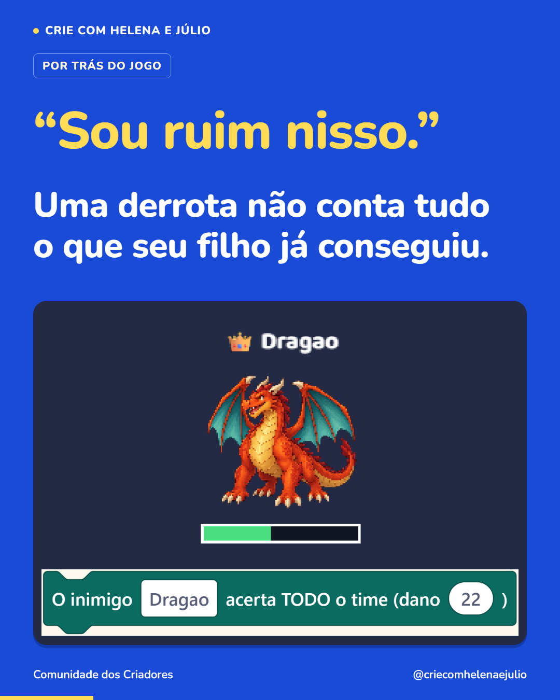

P08 · “Sou ruim nisso.” Uma derrota não conta tudo o que seu filho já conseguiu.
Imagem única · 1080 × 1350 · Por trás do jogo · Segunda publicação da semana 11


Legenda completa
Quando seu filho disser “sou ruim nisso”, peça para mostrar qual parte ficou difícil. Ele pode ter conseguido várias etapas antes daquela tentativa. Vale reconhecer o que funcionou e olhar com calma para o que mudou. Num jogo que montamos, o dragão começa atacando de um jeito. Depois de perder metade da vida, passa a atingir o time inteiro. A dificuldade aumentou porque colocamos essa regra no jogo. Quem joga precisa descobrir como lidar com essa mudança. Ao criar uma batalha, a criança escolhe quando aumentar a dificuldade e testa o resultado. Ela vê que uma fase difícil também depende de decisões de quem a construiu. Para a próxima tentativa, pode procurar outra estratégia ou pedir ajuda. Siga @criecomhelenaejulio para conhecer o que seu filho pode descobrir criando os próprios jogos.